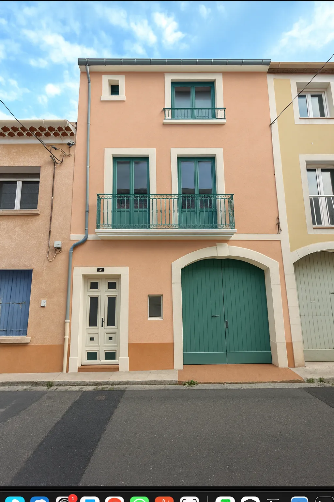

Ravalement et peinture de façade à Béziers
Rénovation de façades, badigeons à la chaux, peinture minérale et traitement fongicide/hydrofuge. Devis gratuit sous 24 heures.

Nos prestations façades
Nettoyage & préparation
Démoussage, lessivage, traitements fongicides et réparations des fissures avant peinture.
Peinture minérale
Badigeons à la chaux aérienne ou peintures silicates pour un rendu microporeux et durable.
Traitement hydrofuge
Application de produits hydrofuges et oléofuges pour protéger vos façades des intempéries.
Entretien & suivi
Conseils d’entretien et interventions ponctuelles pour prolonger la durée de vie de votre façade.
Pourquoi entretenir votre façade ?
- Protéger votre bien contre l’humidité et les infiltrations.
- Redonner un aspect neuf et valoriser votre maison.
- Respecter les obligations de ravalement des communes.
- Préserver la durabilité des matériaux (pierre, enduits, briques).
Demander un devis façade
N’hésitez pas à nous confier votre projet. Indiquez la surface à traiter et l’état de la façade, et nous reviendrons vers vous sous 24 h.